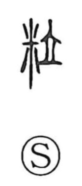

粒

Kun: tsubu | On: ryu
grain ・ granule ・ kernel
Explanation
A phono-semantic character: the rice sign on the left signals the idea of grain, while 立 serves as the phonetic, giving the on reading ryu. The Shuowen explains it as tsubu, originally a grain of rice, and later a grain in general. The Book of Documents (Yi Ji) says 烝民乃粒, meaning that the common people then had grain to eat—an image of having rice and thus being able to make a living.